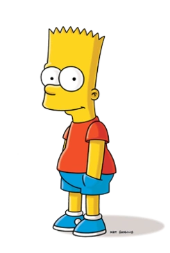
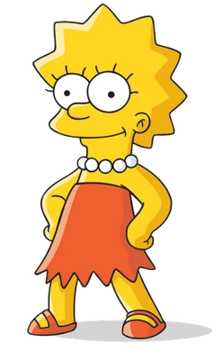

Три члени родини Сімпсонів

«Сі́мпсони» (англ. «The Simpsons») — американський анімаційний сатиричний серіал,
створений Меттом Ґрейнінґом для компанії «Fox».
Мультсеріал — сатирична пародія на стиль життя середнього класу США, втілена в сім'ї Сімпсонів,
яка складається з Гомера, Мардж, Барта, Ліси та Меґґі. Більшість подій відбуваються
у вигаданому містечку Спрінґфілді (англ. Springfield). Шоу висміює численні аспекти життя людей,
американську культуру, суспільство, навіть американське телебачення.
Гомер

Гомер Джей Сімпсон (народився 12 травня 1956) — головний герой серіалу (або серіалу) «Сімпсони ».
Він є чоловіком Мардж Сімпсон і батьком Барта , Лізи та Меггі Сімпсон .
Гомер має надмірну вагу (кажуть, що важить ~240 фунтів), ледачий і часто не знає навколишнього світу.
Хоча Гомер має багато недоліків, він продемонстрував велику турботу, любов і навіть хоробрість до тих,
хто йому небайдужий, а іноді навіть до тих, кого він не любить.
Він також виконує роль головного героя фільму Сімпсони .
- Для початку натисніть будь-яку клавішу". Де знаходиться будь-яка клавіша?
- Ви знаєте, діти, атомний реактор схожий на жінку.
Вам просто потрібно прочитати інструкцію та натиснути відповідні кнопки. - Люди складають статистику, щоб довести що-небудь, і 91% людей це знають.
Барт
Бартоломью ДжоДжо "Барт" Сімпсон — тритагоніст серії.
Він неслухняна, бунтівна і "потенційно небезпечна" старша дитина Гомера і Мардж Сімпсонів,
старший брат Лізи й Меґґі. Прообразом Барта є старший брат Метта Ґрейнінґа, Марк.
- Я не обіцяю, що спробую, але спробую.
- Поцілувати вас? Тату, я просто твій син!
- Мілхаус, як хтось із такими великими окулярами може бути таким німим?!
Ліза

Ліза Марі Сімпсон (народилася 9 травня) — старша донька та середня дитина родини Сімпсонів
і одна з двох тритагоністів (разом із Мардж) серіалу Сімпсони.
- Замовкни, мозку. Зараз у мене є друзі, ти мені більше не потрібен.
- БААААРТ!!!
- Треба говорити правду.